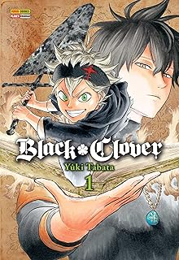
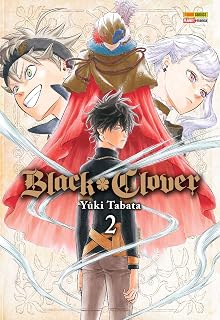
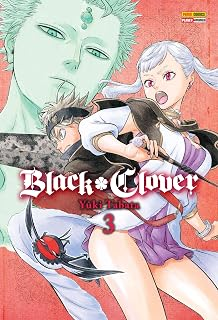
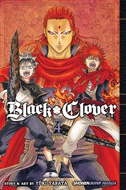

Produtos

Em um mundo onde a magia é tudo, Asta nasceu sem nenhum poder mágico. Ao contrário dele, seu rival Yuno é um prodígio abençoado com o grimório de quatro folhas. Determinados a cumprir a promessa de se tornarem o Mago Imperador, ambos partem para o Exame de Seleção dos Cavaleiros Mágicos, onde Asta ganha um misterioso grimório de cinco folhas contendo a Anti-Magia!

"Após o exame, Asta é recrutado para o pior esquadrão de todos: os indisciplinados Touros Negros, liderados pelo intimidador Yami Sukehiro. Junto com Noelle Silva, uma nobre com dificuldades para controlar sua magia, Asta encara sua primeira missão oficial na vila de Saussy para proteger cidadãos indefesos contra magos malignos.

Uma antiga masmorra surge na fronteira do Reino Clover, guardando relíquias e itens mágicos de grande poder. Asta, Noelle e Luck são enviados para explorá-la, mas encontram magos do reino inimigo de Diamond. No meio da batalha, Asta se reencontra com Yuno, e ambos precisam unir forças contra o temível Mars!

Após a arriscada missão na masmorra, Asta e Yuno são convidados para uma cerimônia de condecoração na Capital Real, onde conhecem os melhores Cavaleiros Mágicos do reino. No entanto, o evento é interrompido por um ataque surpresa promovido pela misteriosa organização Olho do Sol da Meia-Noite, forçando os jovens magos a lutar pela vida dos cidadãos!